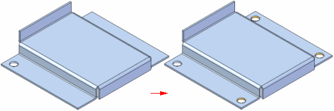
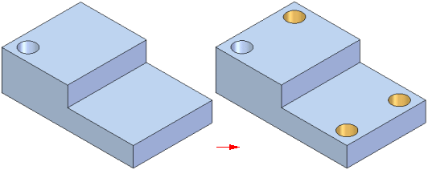
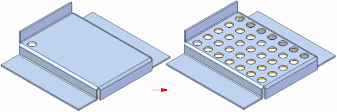
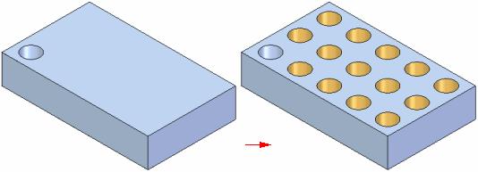

Pattern command bar
The Pattern command bar is available for creating rectangular and circular patterns of 3D objects in the ordered environment.
- Main Steps
-
- Select Step
-
Defines the elements you want to pattern. You can select features, edges, surfaces, and design bodies.
- Plane or Sketch Step
-
Allows you to draw or select a pattern profile.
- Draw Profile Step
-
Allows you to edit the profile for an existing feature. A profile is a 2D curve that defines the shape and location of the feature. To create a base feature by protrusion, the profile must be closed. This step is available only when you are editing an existing feature.
- Select Parts Step
-
Specifies the parts which are included in the pattern feature. Scope parts for the pattern are defined by the scope parts of the parent features. The Select Parts Step allows addition of scope parts to the parent features in cases where additional parts must be added to the pattern. To remove parts from the pattern, edit the parent features' scope parts.
This option is available only in the Assembly environment.
- Preview/Finish/Cancel
-
This button changes function as you move through the feature construction process. The Preview button shows what the constructed feature will look like, based on the input provided in the other steps. The Finish button constructs the feature. After previewing or finishing the feature, you can edit it by re-selecting the appropriate step on the command bar. The Cancel button discards all input and exits the command.
- Select Step Options
-
- Smart
-
Constructs the feature using the Smart option. The Smart option takes longer to process, but can handle more cases. The Smart option should be used when individual pattern members encounter different geometry than the feature being patterned or mirrored. This option is available only when the Select option is set to Feature.
Use a smart pattern where fast patterning is not feasible. For example, you should use a smart pattern when the patterned features modify a different set of faces than the original feature. The pattern of cutouts shown modifies a different set of faces than the original cutout. A fast pattern will not work in this situation, a smart pattern should be used.


- Fast
-
Constructs the feature using the Fast option. The Fast option processes very quickly, but it cannot be used if any members encounter different geometry than the feature being patterned or mirrored. If a fast pattern or mirror fails, simply select the Smart option and recompute the feature. This option is available only when the Select option is set to Feature.
Use a fast pattern when the patterned features modify the same set of faces as the original features. The pattern of cutouts shown modifies the same two faces on the part as the original cutout feature. A fast pattern is the best choice here.


- Select
-
Specifies the type of element you want to pattern. The options that are available depend on which environment you are in.
-
Single—Allows you to select one or more individual elements, such as features, edges or surfaces.
-
Chain—Allows you to select a endpoint connected set of elements by selecting one of the elements in the chain. This option is useful when patterning edges or surfaces.
-
Body—In a part or sheet metal document, the Body option allows you to select the following types of bodies:
-
Curve bodies, such as a keypoint curve.
-
Surface bodies, such as a surface body.
-
Design body, which is the entire solid model.
In an assembly document, the Body option allows you to select material addition features such as protrusions, when you have specified that the assembly is a weldment assembly.
-
-
Feature—In a part or sheet metal document, the Feature option allows you to select a feature, such as a protrusion, cutout, or hole feature.
In an assembly document, the Feature option can only be used to pattern material removal features.
Note:When constructing and editing pattern features, you cannot have more than one element type in a single pattern. For example, you cannot pattern a hole feature, a design body, and a curve body in one operation.
-
- Deselect (x)
-
Clears the selection.
- Accept (check mark)
-
Accepts the selection.
- Plane or Sketch Step Options
-
- Create-From Options
-
Sets the method of defining the profile plane or specifies that you want to construct the feature using an existing sketch. Depending on the model you are constructing, some of the options listed may not be available. For example, if no sketches exist in the model, the Select From Sketch option is not displayed.
-
Select From Sketch—Specifies that you want to define the profile for the feature using an existing sketch.
-
Coincident Plane—Specifies that you want to define a plane that is coincident to an existing reference plane or a planar face on the part. When you set this option, a default X-axis and direction is applied to the new reference plane. You can use keyboard accelerators to define a different X-axis and direction for the new reference plane.
-
Parallel Plane—Specifies that you want to define a plane that is parallel to an existing reference plane or a planar face on the part. When you set this option, you can specify the parallel offset distance. When you set this option, a default X-axis and direction is applied to the new reference plane. You can use keyboard accelerators to define a different X-axis and direction for the new reference plane.
-
Angled Plane—Specifies that you want to define a plane that is at an angle to an existing reference plane or planar face on the part. When you set this option, you can specify the angle value you want.
-
Perpendicular Plane—Specifies that you want to define a plane that is perpendicular to an existing reference plane or planar face on the part.
-
Coincident Plane By Axis—Specifies that you want to define a plane that is coincident to an existing reference plane or a planar face on the part. When you set this option, you define the X-axis and direction for the new reference plane using a linear edge, a planar face, or another reference plane.
-
Plane Normal to Curve—Specifies that you want to define a plane that is perpendicular to a curve you select. This is the default option when constructing a helix using the Perpendicular option.
-
Plane By 3 Points—Specifies that you want to define a plane by three keypoints you select.
-
Feature's Plane—Specifies that you want to define a plane that is coincident to a reference plane used to define an earlier feature. You can select the feature you want using PathFinder or in the graphic window. This option is not available when constructing the base feature.
-
Last Plane—Automatically selects the reference plane used for the previous feature. This option is not available if the last feature was a pattern or when constructing the base feature.
-
Tangent Plane—Specifies that you want to define a plane that is tangent to a curved face on the part. You can select a cylinder, cone, sphere, torus, or b-spline surface. When you set this option, you can also specify the angular rotation value. When you set this option, a default X-axis and direction is applied to the new reference plane. You can use keyboard accelerators to define a different X-axis and direction for the new reference plane.
-
- Select From Sketch Options
-
- Select
-
Sets the method of selecting a sketch element.
-
Single—Allows you to select one or more individual elements.
-
Chain—Allows you to select a endpoint connected set of elements by selecting one of the elements in the chain.
-
- Deselect (x)
-
Clears the selection.
- Accept (check mark)
-
Accepts the selection.
- Other Command Bar Options
-
- Name
-
Displays the feature name. Feature names are assigned automatically. You can edit the name by typing a new name in the box on the command bar or by selecting the feature and using the Rename command on the shortcut menu.
How do I
Construct an ordered rectangular pattern featureCreate a 2D rectangular pattern of sketches
Construct an ordered circular pattern feature
Create a 2D circular pattern of sketches
Construct a Fast Pattern
Construct a Smart Pattern
Define the pattern plane
Learn more
Pattern featuresRectangular Pattern (ordered)
Circular patterns
Look up more details
Pattern command (ordered)Rectangular Pattern command bar (ordered sketch)
Circular Pattern command bar (ordered sketch)